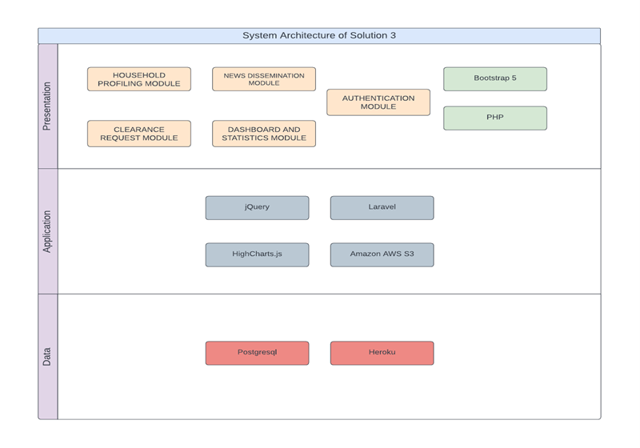
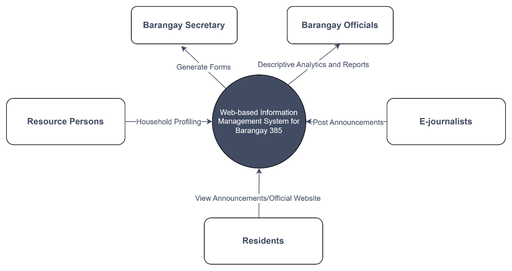

-
Because demand is constantly changing and deliverables must be supplied to the client quickly, the
researchers need flexible and adaptable development approaches. It can be accomplished by breaking
up the development process into brief cycles or iterations that last a few times a week so that at
the end of each cycle the internal team or external customer can get a version of the project that
has a value. Following this, the researchers utilized the Scrum Methodology.

-
The figure shows the system architecture that can accomplish the customer requirements using various frameworks and libraries.
- Presentation Layer
- The presentation layer is made of the five (5) major features and the interface will be displayed via PHP and Bootstrap 5 Framework for the components.
- Application Layer
- Laravel Framework and Jetstream will be used primarily for authentication and for processing data as well as for performing query to the database.
- Data Layer
- The database will be PostgreSQL and the web system will be hosted via Heroku.
 -
The figure below shows the Level 0 Context Diagram of the IMS.
- Resource Persons
- Resource persons are the users that are allowed to perform the household profiling. It refers to the entities assigned by the Barangay 385 to perform the household profiling.
- Barangay Secretary
- Barangay secretary is the user that can generate forms, and it also serves as the master account since it can access all modules of the system.
- Barangay Officials
- Barangay officials are the entities that can access the dashboard and generate a report regarding analytics and summary of key information of the data store.
- E-journalists
- On the other hand, E-journalist is the entity that can access the announcements module. Lastly, the residents are those who can view the official website of Barangay 385.
In this illustration, it is exhibited that there is a centralized database that serve as the main datastore. In this way, there is interoperability between system modules such as the Descriptive Analytics aggregating information from Household Profiling, as well as the Forms Module retrieving names and other relevant information that come from the latter.
